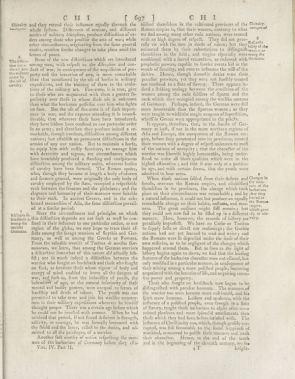

Scan ID britannica:309f765b1ecc83e0a7f7762e44b4a927a7555443:train:1649
Image SHA-256 e6a1fc5698767dd40265a849aa559e35ef251daca6cf3e82cf486dd083a4e3e0
Status: ok. Running header: CH I 671 CHI (catchword). Removed page furniture: Page-header: CH I 671 CHI.
PDF · raw Parse reply · LaTeX
Entries: E0142

| # | Class | Box | Parse 3.5 | Used text | Source |
|---|---|---|---|---|---|
| 1 | Text | [0.0322, 0.0578, 0.459, 0.1508] | Chiraly, and they extend their influence equally through the whole fyllem. Difference of armour, and different modes of military dielpilings, produce difinition of orders among those who prouddle the anti of war, while other circumburse originating from the false general centes, creation familiar changes to take place amid the political peace. | Chivalry, and they extend their influence equally through the whole system. Difference of armour, and different modes of military discipline, produce distinction of orders among those who practise the arts of war; while other circumstances, originating from the same general causes, occasion similar changes to take place amid the scenes of peace. | super_vl |
| 2 | Caption | [0.0303, 0.1406, 0.0977, 0.2313] | ## 4. The difine-tion into a direct into the military entity the use of cavalry. | 6. The distinction introduced into the military order by the use of cavalry. | super_vl |
| 3 | Text | [0.0996, 0.1516, 0.4727, 0.5547] | None of the new difinitions which are introduced among men, with respect to the dielpine and con-a few of war on an conference of the acquisition of property and the invention of arts, is more remarkable than that escalated by the use of horse in military expeditions, and the training of them to the exalviations of the military art. Tre-arm, it is true, give to those for are separated with them a greater fa- peritiory over hote to whom their wife is unknown than that the forena maudific or nor him who lights on foot. But the use of fire arms is of fish apartance in war, and the expense attendi | None of the new distinctions which are introduced among men, with respect to the discipline and conduct of war, in consequence of the acquisition of property and the invention of arts, is more remarkable than that occasioned by the use of horses in military expeditions, and the training of them to the evolutions of the military art. Fire-arms, it is true, give to those who are acquainted with them a greater superiority over those to whom their use is unknown than what the horseman possesses over him who fights on foot. But the use of fire-arms is of such importance in war, and the expense atte | super_vl |
| 4 | Caption | [0.0312, 0.5602, 0.0986, 0.6195] | Mildar is, functions among the moving German Germans | Military dis- tinctions among the ancient Germans. | super_vl |
| 5 | Text | [0.1025, 0.6219, 0.4717, 0.9109] | Another felt worthy of notice reflecting the manera of the batarians of Germany before they cla- | Another fact worthy of notice reflecting the manners of the barbarians of Germany before they clasped arms among the savage warriors of Scythia and Germany, as well as among the Greeks or Romans. From the valuable treatise of Tacitus de moribus Germanorum, we learn, that among the German warriors a distinction somewhat of this nature did actually subsist; not so much indeed a distinction between the warrior who fought on horseback and those who fought on foot, as between those whom vigour of body and energy of mind enabled to brave all the dangers of war, and such as, from the imbecility of yo | super_vl · expanded_beyond_parse |
| 6 | Text | [0.4746, 0.0563, 0.4834, 0.3211] | billified themselves in the cultivated provinces of the Chirary, Roman empire is, that their women, contrary to what we and among many other rule nations, were treated with a high degree of refuted. They did not guess 8 rally rise via the men in deeds of values but they share of the animalist them by their exhordiations to diffusion and warn as freedom in the field, and virtue of expertise were evenge the confided with a faced veneration, as endowed with propried powers, capable to forced eternal aid in the form of fluitty, and even to influence the all of the dieties. Hence, though domestic d | billified themselves in the cultivated provinces of the Chirary, Roman empire is, that their women, contrary to what we and among many other rule nations, were treated with a high degree of refuted. They did not guess 8 rally rise via the men in deeds of values but they share of the animalist them by their exhordiations to diffusion and warn as freedom in the field, and virtue of expertise were evenge the confided with a faced veneration, as endowed with propried powers, capable to forced eternal aid in the form of fluitty, and even to influence the all of the dieties. Hence, though domestic d | parse_fallback · box_too_small |
| 7 | Text | [0.4736, 0.3219, 0.8584, 0.4625] | It apposed to, this, in the fourth of Germany at kall, if not in the more northern regions of Alina and Europe, the components of the Roman cons., below, they generated into its province, treated their women with a degree of rejects unknown to small the nation of anonymity; it that the character of the warrior was likewife highly honourable, being under flood to unice all those qualities which were in the highest education, and that it was only at a particular age, and with certain forms, that the youth were admitted to be armra. | It appears, therefore, that, in the forests of Germany at least, if not in the more northern regions of Asia and Europe, the conquerors of the Roman empire, before they penetrated into its provinces, treated their women with a degree of respect unknown to most of the nations of antiquity; that the character of the warrior was likewise highly honourable, being understood to unite all those qualities which were in the highest estimation; and that it was only at a particular age, and with certain forms, that the youth were admitted to bear arms. | super_vl |
| 8 | Text | [0.4844, 0.4633, 0.9482, 0.5828] | When those actions failed from their defects and the names of the theories in the provinces, the change which took habenam place on their circumstances was remarkably and by either they a natural influence, could not but produce an equally fertile a remarkable change on their hiding out and most the romanem. The great outlines might fill remain, but wish gave they could not now find to be filled up in a different tip to chi- manner. Here, however, the records of all delivery arely. | When those nations sailed from their defects and forfeits, over-ran the Roman empire, and established themselves in its provinces, the change which took place on their circumstances was remarkable; and by a natural influence, it could not but produce an equally remarkable change on their habits, customs, and manners. The great outlines might fill remain; but they could not now fail to be filled up in a different manner. Here, however, the records of history are | super_vl |
| 9 | Text | [0.4854, 0.5836, 0.8535, 0.7422] | pecially imperfect. We have no Cafar or Tacitus to Reply fields or direct reading at the Gotha nation had not yet returned to read and writes , and the Romans were to depreciled under the finite of their own milties, as to be negligent of the changes which appeared around them. But as foon as the light of bilbery begins again to dawn, we find that the leading courses of the bahacion character were not affected, but only modified in a particular manner, in consequence of their missing among a more pollid people, becoming associated with the theories of life, and acquiring extensive five power a | pecially imperfect. We have no Caesar or Tacitus to supply facts or direct our reasonings; the Gothic nations had not yet learned to read and write; and the Romans were so depraved under the sense of their own miseries, as to be negligent of the changes which happened around them. But as soon as the light of history begins again to dawn, we find that the leading features of the barbarian character were not effaced, but only modified in a particular manner, in consequence of their mixing among a more polished people, becoming acquainted with the luxuries of life, and acquiring extensive power a | super_vl |
| 10 | Text | [0.4863, 0.7414, 0.8672, 0.9289] | those who fought on horriback now began to be diltingified with peculiar honours. The manners of warrior too were become more cultivate), and his spirit more humain. Lofure and opulence, with the influence of a polibled people, even though in a fate of slavery, taught those habenam to a desire more robust relations and the federal amendments than those who which they had been before fattued with. The influence of birthtime too, which, though grdify co-exist was still immounds to the fiscal lingands of mankind, concurred to polish their manners and dealt their character. Hence, in the end of th | Those who fought on horseback now began to be distinguished with peculiar honours. The manners of the warrior too were become more cultivated, and his spirit more humane. Leisure and opulence, with the influence of a polished people, even though in a state of slavery, taught those barbarians to aspire after more refined pleasures and more splendid amusements than those which they had been before satisfied with. The influence of Christianity too, which, though greatly corrupted, was still favourable to the social happiness of mankind, concurred to polish their manners and exalt their character. | super_vl |
Britannica scans: National Library of Scotland, CC0 1.0. Wikipedia text: Wikipedia contributors, CC BY-SA 4.0, revision links on each page. Generated 2026-10-18T13:26:14+00:00.